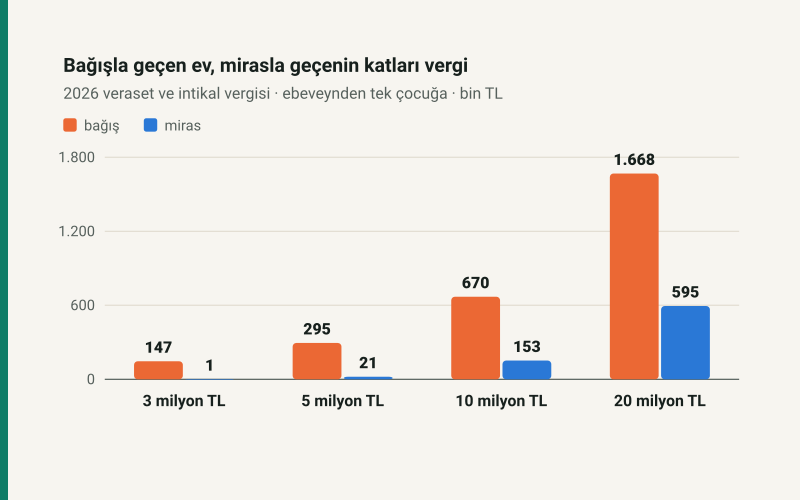

Kısa cevap
Vergi açısından miras hemen her durumda çok daha ucuz. 2 milyon TL'ye kadar değerde mirasta vergi hiç çıkmazken bağışta 46.653 ile 96.653 TL arasında vergi çıkıyor. 3 milyon TL'de bağış vergisi mirasınkinin 158 katı; değer büyüdükçe fark küçülüyor ama kapanmıyor: 20 milyon TL'de hâlâ 2,8 katı.
Sebep iki kural: mirasta her çocuğun istisnası 2.907.136 TL, bağışta 66.935 TL; mirasta oran %1'den, ebeveynden çocuğa bağışta %5'ten başlıyor.
İki yol, iki tarife
Mirasta da bağışta da aynı vergi ödenir: veraset ve intikal vergisi. Ama 7338 sayılı Kanun iki yolu farklı vergiler:
| Kural | Miras | Bağış (ebeveynden) |
|---|---|---|
| İstisna (çocuk başına) | 2.907.136 TL | 66.935 TL |
| İlk 3.000.000 TL | %1 | %5 |
| Sonraki 7.000.000 TL | %3 | %7,5 |
| Sonraki 15.000.000 TL | %5 | %10 |
| Sonraki 30.000.000 TL | %7 | %12,5 |
| 55.000.000 TL'yi aşan | %10 | %15 |
Bağış oranları, ivazsız intikal tarifesinin yarısıdır: Kanun ana, baba, eş ve çocuktan yapılan bağışlarda oranları yarıya indirir (m.16). Bu indirim bile farkı kapatmaya yetmiyor, çünkü istisna farkı çok büyük.
Aynı değer, dört yol
| Değer | Bağış, tek çocuğa | Bağış, iki çocuğa yarı yarıya | Miras, tek çocuk | Miras, iki çocuk |
|---|---|---|---|---|
| 1.000.000 TL | 46.653,25 TL | 43.306,50 TL | 0,00 TL | 0,00 TL |
| 2.000.000 TL | 96.653,25 TL | 93.306,50 TL | 0,00 TL | 0,00 TL |
| 3.000.000 TL | 146.653,25 TL | 143.306,50 TL | 928,64 TL | 0,00 TL |
| 5.000.000 TL | 294.979,88 TL | 243.306,50 TL | 20.928,64 TL | 0,00 TL |
| 10.000.000 TL | 669.979,88 TL | 589.959,75 TL | 152.785,92 TL | 41.857,28 TL |
| 20.000.000 TL | 1.668.306,50 TL | 1.339.959,75 TL | 594.643,20 TL | 305.571,84 TL |
Bağışı iki çocuğa bölmek vergiyi biraz düşürüyor: her çocuk kendi istisnasını ve tarifenin kendi alt dilimlerini kullanıyor. Ama mirasın yanında fark küçük kalıyor. Mirasta ise çocuk sayısı arttıkça vergi hızla sıfıra iniyor, çünkü her çocuk 2,9 milyon liralık bir istisna daha getiriyor.
Fark ne zaman küçülüyor?
Değer büyüdükçe iki tarifedeki istisna farkı toplam içinde önemini yitiriyor ve geriye yalnız oran farkı kalıyor. 3 milyon TL'de bağış vergisi mirasınkinin 158 katı, 5 milyonda 14 katı, 10 milyonda 4,4 katı, 20 milyonda 2,8 katı. Yani bağışın vergi cezası en çok, sıradan bir ev ya da birikim düzeyinde hissediliyor.
Vergi tek ölçüt değil
Bu yazı yalnızca veraset ve intikal vergisini karşılaştırıyor. Sağlıkta devretmenin kendi gerekçeleri olabilir ve kararın vergi dışı tarafları vardır: tapu işlemlerinin masrafı, diğer mirasçıların saklı pay hakları ve devri yapanın ileride o mala ihtiyaç duyup duymayacağı. Bunlar hesaba girmedi; karar öncesinde bir hukukçuya ve mali müşavire danışmak gerekir.
Bağışta beyanname, malın edinildiği tarihi izleyen bir ay içinde verilir; mirasta süre ölüm tarihinden itibaren dört aydır (m.9). Her iki yolda da vergi üç yılda altı eşit taksitte ödenir (m.19).
Kendi hesabınız
Veraset ve intikal vergisi hesaplama aracının bağış kipine değeri girin; araç aynı değer tek çocuğa miras kalsaydı çıkacak vergiyi de yan yana gösterir. Miras kalan evin vergisi aile yapısına göre nasıl değişiyor: miras kalan ev için vergi ödenir mi?
Kaynaklar
- 7338 sayılı Veraset ve İntikal Vergisi Kanunu m.4/1-b ve d (istisnalar), m.9 (beyanname süreleri), m.16 (tarife ve yakın akraba indirimi), m.19 (ödeme).
- VİVK Genel Tebliği Seri No: 57, Resmî Gazete 31.12.2025, sayı 33124 (5. Mükerrer).
Tablodaki tutarlar sitenin açık kaynaklı veraset modülünden üretilir ve otomatik testle yeniden hesaplanır; 2026 tutarlarına çivilidir. Değerler taşınmazda emlak vergisi değeridir.
Sık sorulan sorular
Evi çocuğa bağışlamak mı, miras bırakmak mı daha az vergili?
Miras. 2026'da emlak vergisi değeri 3.000.000 TL olan ev tek çocuğa bağışla geçerse 146.653,25 TL, mirasla geçerse 928,64 TL veraset ve intikal vergisi çıkar.
Anne-babadan çocuğa bağışta vergi indirimi var mı?
Var: ana, baba, eş ve çocuktan yapılan bağışlarda ivazsız intikal oranlarının yarısı uygulanır, yani %5'ten başlar. İstisna ise yalnızca 66.935 TL'dir.
Bağışı iki çocuğa bölmek vergiyi düşürür mü?
Biraz düşürür, çünkü her çocuk kendi istisnasını ve alt dilimleri kullanır. 10.000.000 TL'lik bağışta vergi 669.979,88 TL'den 589.959,75 TL'ye iner.
Bağışta beyanname ne zaman verilir?
Malın edinildiği tarihi izleyen bir ay içinde. Vergi üç yılda altı eşit taksitte ödenir.